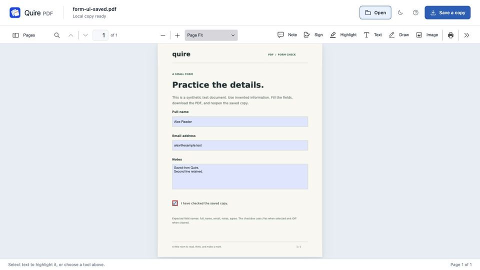

How to fill a PDF form in Chrome without Adobe
Short answer: you often don’t need anything extra. Chrome’s built-in PDF viewer can fill in many PDF forms. Open the form in Chrome, click into the fields and type, then choose Download › With your changes.
An extension such as Quire PDF adds a local library of your documents, recovery for unfinished work, notes and images, a reusable signature and page tools.
Updated 12 October 2026. Chrome steps follow Google’s Chrome help.
Fill a form with Chrome’s built-in viewer
- Open the PDF in Chrome
Click the link to the form, or drag the PDF file from your computer into a Chrome window. It opens in Chrome’s own PDF viewer.
- Click a field and type
Fillable forms have boxes you can click into. Tick checkboxes and pick options the same way. Press Tab to move to the next field.
- Sign if you need to
Google’s help describes signing by choosing Draw, then the pen, and drawing your signature. Zooming in first helps.
- Download the filled form
Choose Download, then With your changes. The filled copy goes to your Downloads folder. Chrome can also save it to Google Drive.
If the boxes don’t respond to clicks, the PDF probably has no form fields. It may be a scan, or a form that was flattened. You can still add text on top of the page. Chrome’s viewer has an Add text tool on computers; see how to annotate a PDF in Chrome.
Fill a form with Quire PDF
Quire PDF is our extension. It fills the same standard form fields and keeps your work on your computer.
- Install Quire PDF
Add Quire PDF from the Chrome Web Store.
- Open the form
Click the Quire PDF icon in the toolbar, then Open a PDF, or drop the file onto the page (up to 100 MB). For a form on a website, right-click the link and choose Open PDF in Quire; Quire asks for access to that one website first. If the site needs a sign-in or redirects, download the form normally and open the file.
- Fill in the fields
Click into each field and type, and tick the checkboxes. A recovery copy is kept in your browser after each change, so a closed tab doesn’t lose your work.
- Add a signature mark if asked
Use Sign to place a typed or drawn signature. It is a picture of a signature, not a certificate-based digital signature.
- Save a copy
Click Save a copy (Ctrl+S, or ⌘+S on a Mac). Quire downloads a filled PDF and never overwrites your original file.

Where Quire PDF helps, and where it doesn’t
- It helps with long forms you finish over several sittings (the document stays in a local library, with a recovery copy), signing several forms (a signature can be saved and reused), and forms that need extra pages or attachments merged in (combine PDFs, reorder or remove pages; two forms with the same field names can’t be combined).
- It doesn’t support XFA forms, an older Adobe form type. If a PDF opens with only a message asking for Adobe Reader, it may be one of these, and Adobe’s own software is the reliable way to fill it.
- PDF scripts are turned off, so fields that calculate totals or check entries with scripts won’t do that.
- A signature is a visual mark. For forms that need a verified, certificate-based signature, use a dedicated e-signature service.
- Your library and recovery copies live in your browser profile, which is not a backup. Keep the copy you download.
Other options
- Adobe Acrobat Reader is free and has a Fill & Sign tool that also works on simple PDFs without form fields. Adobe’s software is the usual way to fill XFA forms.
- Preview on a Mac fills in form fields and can add a signature captured with the trackpad or camera.
- On a Chromebook, PDFs open in the Gallery app, which can fill out forms and add a signature. See how to fill in and sign a PDF on a Chromebook.
Questions
Does Quire PDF upload my form?
No. Quire PDF processes documents on your computer, with no account and no upload to the developer. The library and recovery copies stay in your Chrome profile.
Will my answers be visible in other PDF apps?
Standard form fields filled in Chrome or Quire PDF are saved into the PDF you download, so other PDF readers should show them. Open the downloaded copy once to check before you send it.